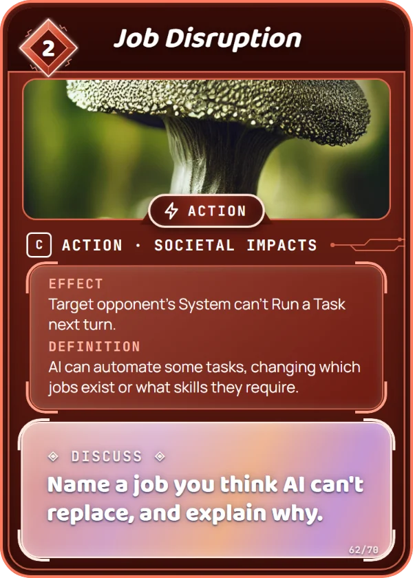

Societal Impacts
AI can automate some tasks, changing which jobs exist or what skills they require.
AI can now do some tasks, like sorting documents or writing simple reports, that used to take people hours.
Pick a job you might want. Which parts could AI help with, and which parts need a person?
Name a job you think AI can't replace, and explain why.
Target opponent's System can't Run a Task next turn. It costs 2 Data to play, and you can put it in your Training Set. How to play